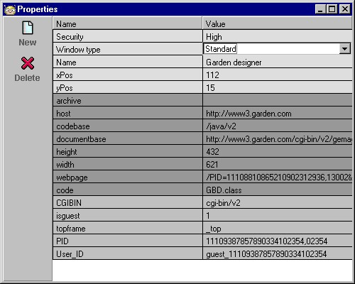
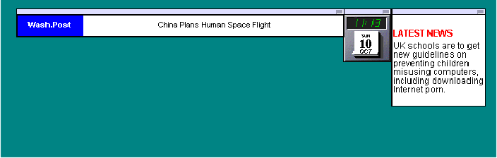

|
|
JBee Help
|
|
|
 Creating your
own
applet desktop
Creating your
own
applet desktop
JBee can execute multiple
applets at once, letting you create your own applet
desktops. Just put the applets you want in the same
folder, click on the folder in the menu, and all applets
in the folder will be executed. Organise applets in
folders: Folder = desktop. Below we will guide you
through a step-by-step example in order to create,
execute and remove a JBee desktop:
 Create a
folder Create a
folder
1) Press the
'Start'-button and then select 'Search and Admin'.
2) When the 'Search and
Admin'-window pops up, press the button labeled 'Admin'.
3) Select the icon with
the computer (the first icon).
4) Press the button
labeled 'New Folder' to create a folder.
5) Double-click on the new
folder and change the name to 'My Desktop', for example.
6) Press the 'Back'
button. You are now back in the 'Admin' page.
Find applets
Search for applets you
like to use for the desktop, using keywords or any URL
you like. You could try some of the following keywords:
ticker, clock, news. Get the idea?
Press 'Save' to save the
applets to the 'My Desktop' folder.
You may also go to the
'Admin' page to drag/drop or copy and paste applets into
this folder.
Note: If you want your
applets to display themselves without the usual window
frame, then double-click the icon representing the applet
in the 'Admin' pages' tree view. A property editor pops
up and you may change the 'Window type' property to
'Small window'
Change window
types
For applets like a clock
or a ticker, you might want to change the window type to
'Small window' (takes up less space and looks good). To
change the window type, go to the Admin page, locate the
applet you want to change and double-click the icon. You
will now see all properties for this applet. Find the
property named 'Window type' and select 'Small window'
from the drop down listbox.

'Start' the
folder
There are two ways to
execute all applets in a folder:
1) Press the
'Start'-button and locate the 'My Desktop' submenu. Click
it.
or
2) In the 'Admin' page,
click on the folder 'My Desktop', then click on the
button labeled 'Run All'
Applets will now start to
pop up on your screen.
Organise your desktop
When the applets are
loaded, start placing them wherever you want them on the
desktop.

You're finished! Whenever
you 'execute' the folder again, the applets will pop up
in the exact same place as before.
A practical way to 'close
down' your desktop is to press the 'Start'-button and
then select 'Kill All' menu item. All running applets
will stop and close down.
Top
|